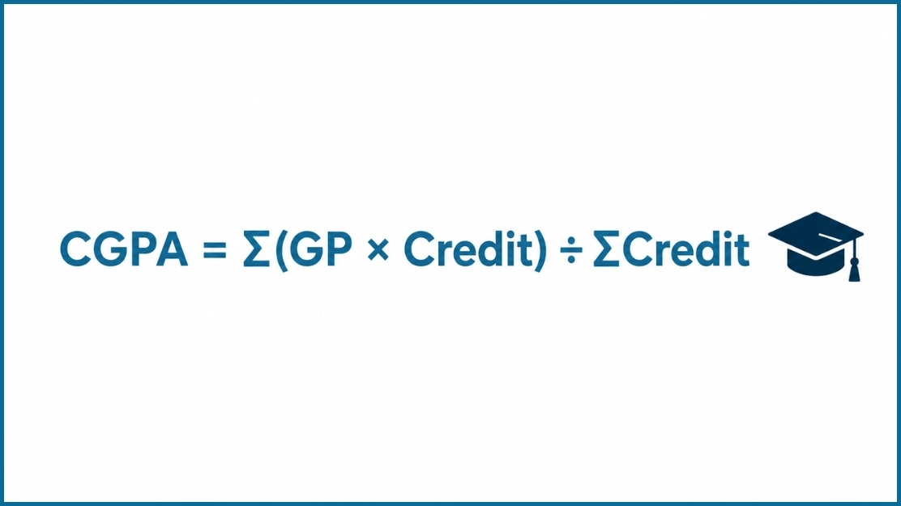

CGPA Calculator for Bangladesh University Students
CGPA Calculator
Target CGPA
SGPA → CGPA
💡 Enter credits per semester for a credit-weighted CGPA. Leave credits blank for a simple average.
What is a CGPA Calculator?
A CGPA calculator works out your Cumulative Grade Point Average, the single number that sums up your results across every semester you have completed. You enter your courses, credit hours and letter grades, and the calculator gives you your CGPA straight away. There is no need to do the multiplication by hand.
This CGPA calculator is made for Bangladeshi students. It follows the standard 4.00 grading scale used by Bangladesh universities (A+ = 4.00, A = 3.75, A− = 3.50 and so on). For each course it multiplies the grade point by the credit hours, adds up all of those weighted points, and divides the total by your total credit hours. The answer is your CGPA.
A semester GPA (SGPA) only covers one term. Your CGPA covers your whole degree so far, which is why it is the figure on your transcript and the one people look at first when you apply for something.
Universities, employers, scholarship committees and admission offices use CGPA to judge your academic standing, from scholarships and job applications to higher studies and honours. Getting the number right matters.
Use this calculator to double-check the CGPA your department gave you, to track your progress after every result, or to set a realistic target for the next semester.
CGPA Grading System in Bangladesh (4.00 Scale)
Most universities in Bangladesh turn your marks into a letter grade and a grade point on a 4.00 scale. The table below shows the pattern this calculator uses, along with the marks ranges commonly applied. The calculator works from the grade point, and marks ranges can differ a little from one university to another.
| Marks (%) | Letter Grade | Grade Point |
|---|---|---|
| 80–100 | A+ | 4.00 |
| 75–79 | A | 3.75 |
| 70–74 | A− | 3.50 |
| 65–69 | B+ | 3.25 |
| 60–64 | B | 3.00 |
| 55–59 | B− | 2.75 |
| 50–54 | C+ | 2.50 |
| 45–49 | C | 2.25 |
| 40–44 | D | 2.00 |
| Below 40 | F | 0.00 |
Your SGPA is the credit-weighted average of your grade points in one semester. Your CGPA is the same calculation across all your semesters. Rules for failed courses and retakes are different at each university, so check your own grading policy before using a result for anything official.
More guides for Bangladeshi students: the Bangla guide সিজিপিএ (CGPA) কী?, what a good CGPA is in Bangladesh, whether CGPA matters for jobs, and CGPA requirements for scholarships.
Which CGPA Scale Should You Use?
Not every university grades the same way. This tool follows the Bangladesh 4.00 scale (A+ = 4.00, A = 3.75), so if your university uses a different system, your result here will be wrong. Find your scale in the table below and open the calculator that matches it.
| Grading Scale | Grading Pattern | Use This Calculator |
|---|---|---|
| Bangladesh 4.00 Scale | A+ = 4.00, A = 3.75, A− = 3.50, B+ = 3.25 … | This is it, the CGPA Calculator above |
| NSU / North American 4.0 Scale | A = 4.00, A− = 3.70, B+ = 3.30 … | NSU CGPA Calculator |
| 10-Point Scale | O = 10.00, A+ = 9.00, A = 8.00 … | 10 Point CGPA Calculator |
| Nigerian 5.0 Scale | A = 5.00, B = 4.00, C = 3.00 … | CGPA Calculator Nigeria |
| Australian 7-Point Scale | HD = 7.00, D = 6.00, C = 5.00 … | CGPA Calculator Australia |
| Canadian 4.33 Scale | A+ = 4.33, A = 4.00, A− = 3.70 … | CGPA Calculator Canada |
Not sure which scale your university uses? Look at your transcript or your university's grading policy. Grade tables can differ even between universities in the same country, so confirm yours before you rely on the result.
Tip: If your department publishes results year by year instead of semester by semester, add each academic year as one "semester" and enter the total credits for that year.
CGPA Formula and Calculation Example

CGPA (Cumulative Grade Point Average) is the total weighted grade points you have earned in all your completed courses, divided by the total credit hours you have taken. It measures your performance over the whole degree, not just one semester.
A semester GPA looks at one term only. CGPA combines every semester and every course, so it shows how consistent you have been over time.
CGPA Formula
The formula is:
Understanding Grade Points
Each letter grade has a numerical value called a grade point. This calculator uses the Bangladesh 4.00 scale: A+ = 4.00, A = 3.75, A− = 3.50, B+ = 3.25, B = 3.00, B− = 2.75, C+ = 2.50, C = 2.25, D = 2.00 and F = 0.00. See the full Bangladesh grading system table with marks ranges.
Understanding Credit Hours
Credit hours show how much a course counts. A university decides a course's credits from its lecture time, lab work and overall workload. Because credits set the weight of a course, a course with more credits moves your CGPA more than one with fewer credits.
Why CGPA Uses a Weighted Average
Many students think CGPA is the plain average of their grades, but it is a weighted average. Each course counts in proportion to its credits. An A in a 4-credit physics course adds more grade points than an A in a 2-credit elective. This way your CGPA reflects how much each course matters in your curriculum.
CGPA Calculation Example
Take a student who has completed these four courses:
| Course | Credit Hours | Grade | Grade Point |
|---|---|---|---|
| Mathematics | 3 | A | 3.75 |
| Physics | 4 | A+ | 4.00 |
| English | 2 | B+ | 3.25 |
| Computer Science | 3 | A− | 3.50 |
Step 1: Calculate Weighted Grade Points
| Course | Credit Hours | Grade Point | Weighted Grade Points |
|---|---|---|---|
| Mathematics | 3 | 3.75 | 11.25 |
| Physics | 4 | 4.00 | 16.00 |
| English | 2 | 3.25 | 6.50 |
| Computer Science | 3 | 3.50 | 10.50 |
| Total | 44.25 | ||
Step 2: Apply the CGPA Formula
So the student's CGPA is 3.69 on the 4.00 scale.
Want more worked examples? Read our step-by-step guide to calculating CGPA or the history behind the CGPA formula.
Factors That Affect CGPA
A few things can move your CGPA over time: your grades in high-credit courses, retaken or failed courses, credit transfer rules, extra electives, and your university's own grading policy. Knowing these helps you plan your semesters sensibly.
Why CGPA Is Important
For most Bangladeshi students, CGPA is the number that follows them after graduation. Universities, scholarship providers, employers and admission committees all look at it when they compare candidates.
A strong CGPA can help you with:
Scholarships and Financial Aid
Many scholarships and stipends set a minimum CGPA. See our CGPA for Scholarships guide for typical requirements.
Honours and Awards
Merit lists, Dean's List recognition and academic awards usually require a CGPA above a set level.
Jobs and Internships
Many employers screen applicants by CGPA, especially for first jobs. Our CGPA for Jobs guide covers what different sectors expect.
Exchange Programs
Student exchange programs often ask for a minimum CGPA as part of their eligibility rules.
Higher Studies
Master's and PhD programs, in Bangladesh and abroad, use CGPA to judge your readiness. A strong record strengthens your application.
Tracking Your Progress
Checking your CGPA after every result shows you where you are weak and lets you set realistic goals before graduation.
Because CGPA covers every semester, it says more about your consistency than any single semester GPA. Learn how to improve your CGPA with practical strategies.
Who Can Use This CGPA Calculator?
This calculator is for any student in Bangladesh who wants a quick, accurate CGPA from their grades and credit hours.
University and College Students
Undergraduate students at public and private universities and NU colleges can add each semester and watch their CGPA, credits and standing update as results come in.
Master's and Postgraduate Students
If you are doing a master's or other postgraduate program, you can track your CGPA across coursework to stay on target for research and further study.
Scholarship Applicants
Many scholarships have a minimum CGPA. Check yours here before you apply so you know whether you qualify.
Students Planning to Study Abroad
Applying for a master's or PhD overseas? Use this to get your 4.00 scale CGPA ready for your application, then convert it if a university asks for a different scale.
Teachers and Academic Advisors
Teachers and advisors can use it to show students how each course grade changes their overall CGPA.
Bangladesh Universities That Can Use This CGPA Calculator
This calculator uses the 4.00 grading scale followed by public universities, National University (NU) colleges and many private universities in Bangladesh, where A+ = 4.00 and A = 3.75. Students at these universities can use it:
DU, BUET, JU, CU, RU, KU, SUST, JnU, BUTEX, KUET, CUET, RUET, HSTU, PSTU, NU, UIU, DIU, AUST, EWU, ULAB, GUB, SEU, BUFT, SUB, NUB, PRIMEASIA, BUBT, IIUC, AIUB, SU
Note: if your university gives A = 4.00 and A− = 3.70, use the NSU CGPA Calculator instead. Grading policies differ between universities, so always follow your university's official academic rules for your final CGPA.
How to Use This CGPA Calculator
It takes about a minute. Follow these steps to get your CGPA:
Check Your Grading Scale
This calculator uses the Bangladesh 4.00 scale (A+ = 4.00, A = 3.75, A− = 3.50 … F = 0.00). If your university grades differently, pick a calculator from the Other Grading Scales section.
Add Your Semesters
The calculator starts with one semester. Click "Add Semester" for each additional semester. You can give each one a name if you like.
Enter Your Courses
In each semester, enter the course name, its credit hours and your grade. Click "Add Course" for more courses. The SGPA of each semester updates as you type.
Read Your CGPA
Your overall CGPA appears on the left with a progress bar, your letter grade and your total credits. The bar at the top of the page keeps your CGPA in view as you scroll.
Set a Target CGPA
In the Target CGPA section, enter the CGPA you want and your remaining credits to see the GPA you need in those credits.
Download Your Report
Click "Download Report" to save a clean report of all your semesters, courses, SGPAs and your CGPA, handy for scholarship applications or your own records.
How to Improve Your CGPA
Improving your CGPA takes steady effort and some planning. Every grade counts in a credit-weighted average, so even a small improvement in a high-credit course can lift your CGPA noticeably over time.
For practical strategies, including how to focus on your highest-credit courses and how retakes and grade replacement can help, read our full guide on how to improve your CGPA.
CGPA vs GPA
Students often mix up GPA and CGPA. They are related, but they measure different things. Here is how they differ.
| Aspect | GPA (Grade Point Average) | CGPA (Cumulative GPA) |
|---|---|---|
| Scope | Single semester or term | Entire academic program |
| Also Known As | SGPA (Semester GPA) | Overall / Cumulative GPA |
| Calculation Period | One term at a time | All completed semesters |
| Use Case | Tracking semester performance | Scholarships, jobs, grad school |
| Resets Each Semester? | Yes: fresh each term | No: running average |
| Impact of Bad Semester | Only affects that semester | Lowers your overall CGPA |
| Impact of Good Semester | Doesn't fix past semesters | Gradually improves CGPA |
GPA tells you how you did this semester. CGPA tells you how you have done across your whole degree. For more detail, see our CGPA vs GPA comparison guide for more insights.
Why Use Our CGPA Calculator?
Instant Results
Your CGPA, SGPA and progress bar update as you type. There is no "Calculate" button to press.
Target CGPA Planner
Enter the CGPA you want and your remaining credits, and see the GPA you need. You will know straight away if your target is realistic.
Multiple Semesters
Add as many semesters and courses as you need. Each semester shows its own SGPA and your overall CGPA covers your whole degree.
Downloadable Report
Save a neat report of all your semesters, courses and CGPA, useful for scholarship forms and job applications.
Made for Bangladeshi Students
Built on the 4.00 scale used in Bangladesh, with separate calculators for NSU-style, Indian, Nigerian, Australian and Canadian scales.
Works on Any Device
Use it on your phone, tablet or computer. It is free and there is nothing to install.
Frequently Asked Questions
Most universities in Bangladesh use a 4.00 scale: A+ = 4.00, A = 3.75, A− = 3.50, B+ = 3.25, B = 3.00, B− = 2.75, C+ = 2.50, C = 2.25, D = 2.00 and F = 0.00. Marks ranges and the rules for failed or retaken courses differ between universities, so check your official grading policy. The full table is in the Bangladesh grading system section above.
Multiply each course's grade point by its credit hours, add up the weighted points from all your semesters, then divide by your total credit hours: CGPA = Total Weighted Grade Points ÷ Total Credit Hours. For example, courses of 3, 4, 2 and 3 credits with grades A, A+, B+ and A− give 44.25 ÷ 12 = 3.69. The calculator above does this for you as you type. For a manual walkthrough, see our step-by-step CGPA calculation guide.
Yes, if your university uses the standard Bangladesh 4.00 scale (A+ = 4.00, A = 3.75). Public universities such as DU, BUET, RU, CU and JU, and National University (NU) colleges, generally do. Some private universities give A = 4.00 and A− = 3.70. If that is your university, use the NSU CGPA Calculator instead. Always check against your official grade table.
SGPA (semester GPA) shows how you did in one semester or term. CGPA (Cumulative Grade Point Average) covers every semester you have completed, so it shows your record over the whole degree. Use the GPA ↔ CGPA Converter to switch between scales, or read our CGPA vs GPA guide.
It depends on your goal, your field and your university. On the 4.00 scale, a CGPA of 3.00 or above is generally seen as good, and 3.50 or higher is often seen as excellent. Competitive scholarships, postgraduate programs and international admissions may expect 3.70 or more. Our guide on what is a good CGPA in Bangladesh gives benchmarks by career path.
On a 4.00 scale, many institutions use a simple proportional formula: Percentage = (CGPA ÷ 4.00) × 100. For example, a CGPA of 3.50 is 87.5%. Some employers and universities use their own conversion, so confirm which one applies before you submit. Our CGPA to Percentage Calculator gives you the result instantly.
Use a calculator built for your scale: the NSU CGPA Calculator for the A = 4.00, A− = 3.70 scale, the 10-Point CGPA Calculator for the Indian scale, or the CGPA Calculator Nigeria, CGPA Calculator Australia and CGPA Calculator Canada pages. You can also browse all calculators.
Credit hours set the weight of each course, so a course with more credits affects your CGPA more. Multiply each course's grade point by its credit hours, add the weighted grade points together, then divide by the total credit hours completed. CGPA = Total Weighted Grade Points ÷ Total Credit Hours.
CGPA includes every completed semester in your program. Each semester counts according to the grades you earned and the credit hours you took, and your CGPA is recalculated whenever new results come in. The total number of semesters depends on your program: diploma, bachelor's, master's or doctoral.
It varies by university, program and country. On the 4.00 scale, many universities expect students to keep at least a 2.00 CGPA to stay in good academic standing. Some programs set a higher minimum for graduation, scholarships, honours and postgraduate admission, so check your university's academic policy for the exact figure.
In most cases your CGPA is final once your degree is awarded. Before graduation, some universities allow course retakes, grade replacement, appeals or supplementary exams. If your CGPA is already final, you can still strengthen your profile with postgraduate study, certifications, projects and work experience. Read our guide on how to improve your CGPA before you graduate.
Other Grading Scales
This calculator uses the Bangladesh 4.00 scale. Pick your scale below for a dedicated calculator, or view all calculators.